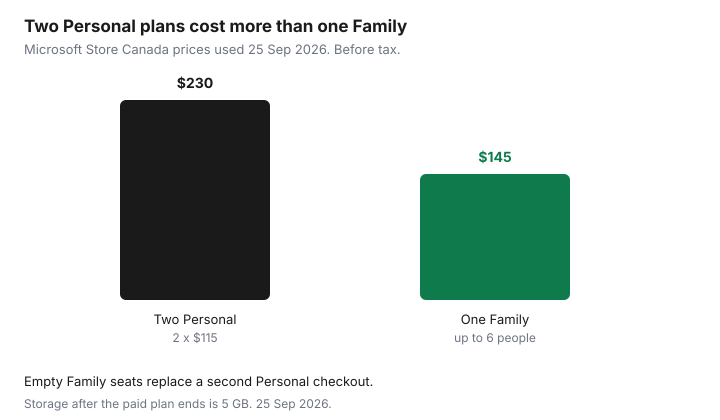

Subscriptions · Canada
How to Cancel or Turn Off Auto-Renew on Microsoft 365 in Canada
The Microsoft 365 charge that stings is the annual one you forgot. The apps still open, so the renewal looks optional until the card posts. On the Microsoft Store Canada pages used 25 Sep 2026, Microsoft 365 Personal is CAD $115 a year or $11.50 a month, and Microsoft 365 Family is CAD $145 a year or $14.50 a month. Both say the subscription renews at the regular price unless you cancel it in the Microsoft account. Turning off recurring billing keeps what you already paid for until the expiry date. Cancelling is a different button, and it is the one tied to a refund check and to the 5 GB storage warning.
Put the renewal on the subscription sheet with the plan name, not “Microsoft, about a hundred dollars.” A Creative Cloud annual plan billed monthly is a different fee, on the Adobe cancel guide. This page is the household Microsoft 365 account: Personal, Family, or Premium bought from Microsoft.
Disclosure: Microsoft Store plan pages are an offer type (Personal, Family, or a one-time Office licence). Saving Optimizer may earn a commission if we later add a partner link. We do not currently claim a Microsoft partnership. Education only. The price and the expiry date on your Microsoft account are the ones that count.
Key takeaways
- Sign in at account.microsoft.com/services with the Microsoft account that paid. Apple, Google Play, and some retail codes are managed by that seller, not by the Turn off recurring billing link.
- Turn off recurring billing and you keep apps, OneDrive, and Family seats until the expiry date, with no further charge. Cancel subscription is the path Microsoft uses to check a refund, and the cancel article warns that storage falls to 5 GB.
- After the paid allowance ends, Microsoft’s cancel article says cloud storage becomes 5 GB, including OneDrive and Outlook.com attachments, plus 15 GB of Outlook.com mail. Over that limit you cannot upload, edit, or sync, and Microsoft may delete OneDrive after six months.
- Download the files before that drop. Family members each lose the 1 TB seat, not only the owner.
- Store Canada prices used 25 Sep 2026: Personal $115 a year, Family $145 a year for up to six people. Two Personal plans are $230. Do not buy a second Personal while a Family seat is empty.
Sign in to Microsoft account then Services and subscriptions
Open a browser, not the Word start screen, and go to account.microsoft.com/services. Sign in with the email that receives the Microsoft invoices. A work or school account is a different tenant. If the household uses a personal outlook.com or a Gmail address as the Microsoft account, that is the one. The wrong sign-in shows an empty services list, which feels like the subscription vanished. It did not. It is on the other account.
Find Microsoft 365 and select Manage. You want four facts before you click anything else: the plan name (Personal, Family, or Premium), the price, whether the cycle is monthly or annual, and the expiry or renewal date. Screenshot that panel into the same folder as the statement hunt. If Manage is missing, you may already be on the details page, or you are in the wrong account.
Microsoft’s recurring-billing help says a purchase from Apple, Google Play, or certain retailers is managed by that seller. The Manage link should send you there. A product key or prepaid card shows as paid with a prepaid card, and recurring billing cannot be turned on for that token. When it expires you buy again only if you still need it. Do not start a second subscription beside a code that is still running.
Turn off recurring billing vs cancel immediately—know the difference
On Manage, Turn off recurring billing means you will not be billed again. Microsoft’s help page says you, and anyone you shared a Family subscription with, keep the subscription as normal until the expiry date on the account. Scroll the explanation and choose the option that declines the next term. If the link says Turn on recurring billing, auto-renew is already off. Stop. You do not need a second click.
Cancel subscription is the other control. Microsoft’s cancel article, used 25 Sep 2026, says not every cancellation produces a refund, and you have to cancel before the account will show whether a refund applies. The same article’s storage warning is attached to cancel: the allowance reverts to 5 GB. If your only goal is “do not charge me next January, and let me finish this term,” turn recurring billing off. Use Cancel when you want the refund check, or when you are prepared to lose the paid allowance on the timetable that screen describes. Read the “what you’ll lose” text before you confirm. The button labels move. The expiry date does not.
If you do not see Cancel, and you do see Turn on recurring billing, Microsoft says the subscription is already set to expire and no further action is required. A trial is earlier still: cancel it before it converts, in the store that billed the trial.
What you keep until period end (apps, OneDrive)
After you turn recurring billing off, the paid benefits run to the expiry date. That includes the desktop apps on the devices already installed, the 1 TB of OneDrive that comes with Personal (1 TB per person on Family, up to 6 TB), and the seats you already shared. Family sharing does not hand the owner’s AI features to everyone else. Microsoft’s Canada plan pages say AI features in the Microsoft 365 apps are for the subscription owner and are not shared. A spouse who only needs Word is not missing Copilot. Do not upgrade the whole house to chase a feature one person uses.
When the paid plan actually ends, the cancel article is blunt. Cloud storage becomes 5 GB, and that 5 GB includes OneDrive and Outlook.com attachments. Outlook.com mailbox storage is listed separately at 15 GB. If you or a person you shared with are over the free allowance, you cannot upload, edit, or sync new files to OneDrive, including Camera Roll, and you cannot send or receive mail in Outlook.com. After six months Microsoft may delete OneDrive and the files in it. Six months is not a second year of Family storage. It is a warning window on an account that is already over the free quota.

Back up OneDrive before storage drops to free tier
Do the copy while the 1 TB seat still works, which is before the expiry date if you only turned billing off, and before you confirm Cancel if you are leaving now. Files On-Demand shows names that are not fully on the disk. In the OneDrive desktop app, choose the folders and use the control that keeps them on this device, then wait until the download finishes. Open a couple of large folders and confirm the files are real, not cloud placeholders.
- Photos and the phone Camera Roll folder, if the phone backs up to this OneDrive.
- Documents, the tax folder, and any side-hustle client files. A second copy on a drive you own is enough. You do not need another cloud subscription to hold a folder.
- Outlook.com, if that address is the household mail. Export or move mail before send and receive stop. Attachments count toward the 5 GB cloud figure Microsoft describes.
- Each Family member’s own OneDrive. The owner’s backup does not include a teenager’s school folder. Each person signs in and downloads.
Then look at storage used. If it is already over 5 GB, the free tier will lock sync the day the paid allowance ends. The six-month deletion note is the reason to finish the copy now, not “later in the spring.”
Retail boxed Office vs subscription for light users
Office Home 2024, on the Microsoft Store Canada product page, is a one-time purchase for one PC or Mac: classic Word, Excel, PowerPoint, and OneNote. It does not include the services that come with Microsoft 365. There is no 1 TB OneDrive seat, and there is no upgrade to the next major release. You buy that later, at whatever the price is then. The Store page we opened did not lock a single Canadian sticker in the text we could quote, and retailer prices move. Read the Store Canada price the day you compare, then divide it by the number of years you will actually keep that 2024 version.
Before you buy a box, try the free web versions of Word, Excel, and PowerPoint that come with a Microsoft account. They are enough for a letter, a household budget, and a simple deck. They are not enough if you need desktop features, offline work on a large file, or several phones and computers signed in at once. Personal at $115 a year is the one-person subscription. At $11.50 a month it is $138 over twelve months, $23 more than paying annually, before tax. Monthly is the right shape only when you know you will stop inside the year. A light user who opens Word twice a month should not be on an annual renewal “just in case.”
| Plan | Price | Who it covers | Storage |
|---|---|---|---|
| Personal | $11.50 a month or $115 a year | One person | 1 TB OneDrive |
| Family | $14.50 a month or $145 a year | Up to six people, each with their own sign-in | 1 TB per person, up to 6 TB |
| Premium | $27 a month or $270 a year | The compare page says everything in Family, plus higher Copilot usage. AI features stay with the owner. | Includes Family’s storage: 1 TB per person, up to 6 TB. |
| After the paid plan ends | No Microsoft 365 fee | The account remains | 5 GB cloud, including OneDrive and Outlook.com attachments. 15 GB Outlook.com mail. |
Avoid buying a second Personal plan when Family seats exist
Two Personal plans at $115 are $230 a year before tax. One Family plan is $145 and covers up to six people. The gap is $85 a year, and it gets worse if a third person also buys Personal. The mistake is a partner, a parent, or a teenager starting their own Personal checkout because “the apps asked me to subscribe,” while the owner still has empty seats. Sign in to the Family subscription, invite their Microsoft account, and have them install from that shared seat. Each person gets their own files. They do not share one login.
Count seats you actually use. Paying Family for six when only one person opens Word is the Personal plan’s job, at $115 instead of $145. Paying Premium at $270 a year because a popup mentioned Copilot is a different decision. Write down who used the desktop apps in the last 30 days, the same test as the SaaS audit. If the answer is one person and the files fit in a backup drive plus the free web apps, turn recurring billing off and let the term end. If the answer is two or more people, one Family plan replaces the pile of Personal plans. Calendar the expiry seven days early, with the plan name in the event, so next year starts with a choice instead of a charge.
Sources & date stamps
- Microsoft Store Canada, Microsoft 365 Family and the compare-all-plans page, used 25 Sep 2026: Personal CAD $115 a year or $11.50 a month. Family CAD $145 a year or $14.50 a month, for one to six people, 1 TB each. Premium CAD $270 a year or $27 a month on the compare page. Subscriptions renew unless cancelled in the Microsoft account. AI features on Family are for the subscription owner and are not shared.
- Microsoft Support, “Turn recurring billing on or off,” used 25 Sep 2026: turning billing off keeps the subscription until the expiry date. Apple, Google Play, and some retailers manage their own billing. A prepaid code cannot turn recurring billing on.
- Microsoft Support, “Cancel a Microsoft 365 subscription,” used 25 Sep 2026: cancel to check refund eligibility. Storage reverts to 5 GB of cloud storage, including OneDrive and Outlook.com attachments, and 15 GB of Outlook.com storage. Over the free allowance, upload, edit, and sync stop, Outlook.com send and receive stop, and Microsoft may delete OneDrive after six months. Family and Premium sharing reduces the other people’s allowances too.
- Office Home 2024 product page, Microsoft Store Canada, used 25 Sep 2026: one-time purchase for one PC or Mac, classic apps, no Microsoft 365 services and no upgrade to the next release. No single sticker price is quoted here because the page text did not lock one.
- The $230 versus $145 chart is 2 × $115 compared with Family at $145. It is arithmetic on those Store prices, before tax.
Frequently asked questions
If I turn off recurring billing, do the apps stop today?
No. Microsoft’s recurring-billing help says you keep the subscription, including a Family share, until the expiry date on the account. You are stopping the next charge, not the term you already paid.
I pay every month. Is that the same as an annual plan?
Not always. Personal is $11.50 a month or $115 a year, and Family is $14.50 a month or $145 a year, on the Store Canada compare page used 25 Sep 2026. Monthly over twelve months costs more. Read the cycle on Manage before you assume you are in a year-long contract.
What happens to OneDrive when the plan ends?
Microsoft’s cancel article says cloud storage becomes 5 GB, including OneDrive and Outlook.com attachments, with 15 GB for Outlook.com mail. If you are over that, you cannot upload, edit, or sync, and Microsoft may delete OneDrive after six months. Download the files first.
We bought Microsoft 365 from Apple. Where is the switch?
Microsoft says Apple, Google Play, and some retailers manage cancel and renewal. Use Manage on the services page. It should point at that seller. The Turn off recurring billing link is for a subscription bought from Microsoft.
Should the second adult buy their own Personal plan?
Only if nobody already has Family. Two Personal plans are $230 a year before tax. One Family plan is $145 for up to six people. Invite their Microsoft account to an empty seat instead of starting a second checkout.